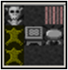
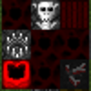
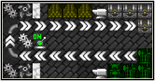
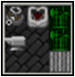
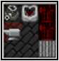
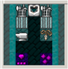
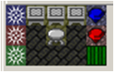
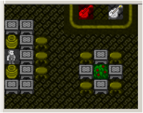

Orcs can use most all of the workshops from vanilla Dwarf Fortress. For the most part we won't go into too much detail as, there's not too much to say about these 'shops: like most races, they cook and brew, hew blocks from stone, and process cloth from plants. Orcs can use some of the workshops introduced in Masterwork, including the Boneyard, Storage Unit, Fishpond, Slag Pit, and Apothecary. The Boneyard and Storage Unit, in particular, are key fixtures in an Orcish fort for processing the enemy and their belongings.A few Masterwork shops, the Orcs can use in a limited capacity. For example, Orcs can make common alloys at the metallurgist, but they cannot produce patternwelded mithril bars or other fine dwarven alloys there. Orcs can use the Trap Engineer, but not the advanced "2nd level" of upgrades.
Recently founded Orc clan holdings can't establish the Stonecutter, Rockforge, Tailor, Poisoner, Gunsmith, or Sawmill, but see the entry on The Goblin Ghetto to see how these industries are supported in larger Orcish villages.
Orcs lack access to uniquely Dwarven buildings like the Gemforge and Glassforge, the Library system, Timberyard, advanced Forge and Furnaces, the Armory and Weaponry, Runesmith, and Armok Religion buildings.

This can be a very important workshop for an early settlement, especially if elves or other dangerous ambushers are settled nearby and you need to get a strong military online fast. It lets Leather and Bone-workers create archaic but deadly weapons and decent armor without any anvil or metal. The inputs are mostly organic materials that can be supplied by hunters (or warriors...) like leather, shells, wood, ash, and bone. The craftsman can even infuse the weapons with blood in a dark ritual to make steel-quality weapons. Therefore, the Tribal Craftsorc should be grouped with the butchery, tannery, boneyard, and crematory/ashery for best results. Forts with a strong metal industry may eventually phase out much of the work due to the complex recipes and limited selection, but some tribal crafters continue to earn their keep by making masks, cloaks, or decorative armor for export.

The boneforge is where orcs can use ancient techniques to form ironbone and bloodsteel. Ironebone is formed from one stack of bones and two bars of ash. It can be transmuted into the stronger bloodsteel with a barrel of blood and an additional bar of ash.
Logs can be reduced to ash at the boneforge, and blood extracted from meat into barrels. Be warned that an entire stack of meat is required for a barrel of blood.
Many Orc clans rely heavily on archers to hunt, and to provide ranged support for the warbands. The Fletcher makes composite bows, requiring lamellar leather as well as wood, or bone or iron. These bows are twice as powerful as the orcish recurve bow, that is, four times the primitive standard bow, so it is worth upgrading when possible. The fletcher can also make batches of arrows from lots of common materials, freeing up your forges for other work.

The Factory is a multi-purpose building found in most permanent Orcish settlements. It can be used to make big batches of building material, perfect for big building projects above ground. It turns farmed trees directly into charcoal while also collecting seeds -- note, Orcs don't use a Timberyard. There are a few good options for batches of weapons, quite efficient use of bars assuming you are using "Harder Smithing" setting, but not a great amount of selection.
The Factory also allows mass production of cheap gear from inferior metals, perfect for front line grunts or for weapon traps. Mass produced goods are sufficient for Orcish Raid parties, too.
The Molten Pit is a versatile building with a couple different uses. First, it is the Orcish mass production furnace. The efficiency is a bit low, and some of the material produced will be low quality rusty iron. Rusty iron can be used at the factory for rebar, barbed wire; minted into coins to pay Freelancers; or it can be cleaned up into regular useable iron at the blacksmoke furnace. Orcs are comfortable working with low grade metals, and the worker will automatically dispose of any waste slag and sometimes recycle small quantities of usable product like flux, potash, or malachite.
The Molten Pit can also be used to reforge ill-fitting salvaged armor and weapons from pitiful small enemies. Re-forging allows you to very quickly convert small gear made from good materials into usable armor. Note, however, that the "cheap" recycled or factory pressed armor have some gaps and misfits, so they only provide 80% coverage. Be careful to use stockpiles to control which pieces the worker recycles, and be aware that if put on "repeat" he may wastefully rework the same item over and over. Simply scrapping the items will provide a chance to recycle materials from the slag, but it will always be low grade metals. If you want to melt a piece down to recover high quality material bars, you should use the normal smelter.
The blacksmoke furnace is the is cornerstone of orcish heavy industry. It allows the extraction of oil from oilbearing stones, or the conversion of four bars of coke into oil. Acid can be distilled from flux, a vial, and a boulder of either brimstone, saltpeter, or rock salt. Be warned that acid is so corrosive it will render the vial unusuable after the vial of acid has been used in a reaction.
Acid allows for the removal of rust from iron or steel, and oil is used in the processing of rare minerals such as aluminum, chromium, cobalt, and titanium. Batches of fire and acid arrows can be crafted with wood, iron and oil/acid respectively. Foreign-made cannons can be upgraded to flamethrowers, and oil and mechanisms can be combined in a box to create detonator or stickbomb satchels, which the bravest of warriors can carry instead of a shield. Finally, acid and oil can be combined to form synthsilk. While not as valuable as the rare silks found in nature, it's perfectly serviceable for use in threads and cloth.
All reactions at the blacksmoke furnace require fuel.
The steamfoundry uses the skills of an advanced mechanic to improve existing orcish materials and items. If orcs come into the possession of a prototype golem, they can activate, equip, and repair it here. Many reactions requite an automaton gizmo, which are looted from automaton corpses. However resourceful orcs can enchant these from an existing mechanism and a soul-gem (enchanted at a totem pole).
The steamfoundry allows of the construction of synthshells (equivalent to shellplate) by impregnating cloth with aluminium or titanium. The steamforge can upgrade scimitars, toothed axes, mauls, and flachette guns to more powerful mechanised versions. These all require oil, automaton gizmos, and razorwire (edged weapons), lead (mauls), or brass (flachette guns).
Finally, if orcs obtain a toolkit or dwarf tools, they can create powerful landmines (toolkit) or upgraded axe and saw traps (dwarf tools). Upgraded traps also require pulleys, which can be raided from merchant shipping, purchased at the arms bazaar, or crafted at the goblin tinkerer.
 
A warlord and his chosen war-orcs might get their weapons at a Orcish Damascene Shop, where an artesian uses ancient methods to fold exquisite blades from rare metals. Unfortunately, the orcish damasc worker needs foreign tools salvaged from human or dwarven loot to make the finest armors. The Damascene folder requires rare ores such as mithril, cobalt, or wolfram; and tempers these alloys with steel, copper, silver, or gold. He uses powdered materials directly to create unique alloys, and cannot create standard bars for use at the forge.

In a past age, there were great Orcish dark citadels stretching from the surface to the deep roots of impenetrable mountains. Among these Deep-Orcs, the greatest armies were lead not by brutish warlords, but fell sorcerer-kings and powerful druids. They wielded special Orichalcum alloy weapons that reinforced their magical links to the chaotic magic of the spirit realm, or into the eldritch power of the forests. Today the great Arcane Forges of the old kingdoms have been lost; destroyed or captured by armies of the jealous Drow striking from the underdark.
The warchief who has enough Orichalcum on hand to light a new Arcane Forge will be able to equip his Dreamwalkers with enchanted weapons which give the wielder access to powerful battle-magicks. If the wielder is willing to give up use of a shield, he can also use an off-hand Dreamcatcher, an arcane focus enchanted with a second supporting spell. The Arcane forge can also craft runic ammo to be cast from magic weapons, although these must be taken to a Place of Power (stone circle, etc.) to become enchanted with any special effects.

The ashclan elves live a semi-nomadic lifestyle, with outposts scattered outside the primeval forests and off the major routes of trade. Without reliable access to steeloak or mithril ore, they have developed an alternative crafts tradition of glassblowing. They make expensive "ruby stained" glass from powdered gold, and fine "cobalt stained" glass from cobaltite. With access to moonstone and malachite, or obsidian, they can make weapons-quality metallic glasses that rival the mithril gear of their silvan cousins, including the sharp, lightweight green ashland glass and heavy ebonglass.
Deep drow traditionally patrol the caverns of the underdark with wicked curved blades and crossbows made from crystalwood, devilthorn warhammers, and curious fire-resistant leather armor made from netherwood. Although their motives are suspect, traders from the deep realms sometimes appear offering to share these technologies with their allies.

Human bandits are well known for the raucous pirate dens found in their harbor towns. Gamble for coin, with games available for every price point! Lose money in the long run, but maybe you'll get lucky. Or win the other guy's jewels, weapons, ship... or more if you play at the Shadowbroker's somnium table. Orcs can play some human- or dwarven-style instruments for musical effects, or thoroughly use up any type of instrument by playing Orcish jazz for tips.

Orcish warriors usually favor their slashing weapons, but those who have fought alongside (or against) the forces of the grim Dwarven Legion can attest to the efficient killing power of an army with a mixed arsenal. The auxilla outpost can craft deadly hammers and piercing spears, cast a variety of bolts and javelins, and combine these dwarf-style weapons into versatile mixed-arms kits which are deadly at both melee and ranged combat.
Orcs do not excel at abstract thought, and have not embraced the concept of learning skills from books. However, the orcs' enthusiasm for physical contests and sports can take the place of serious training, to a degree.
Orcs are passionate about any sport played with a ball on a field. The few recorded instances of peaceful interaction between Orcs and Humans involve orcish speakers trading for the rules and equipment for soccer, rugby, lacross, handball, gateball, croquet, and countless other games. Of course, when they get home, they pretty much play every sport the same way, and with very little regard for the human version of the rules. At a training pitch, Orcs can train throwing, striking, dodging, coordination, or melee combat, and will use up on average 1 piece of leather per 10 skill advances.
Orcs enjoy lifting weights, and even more so enjoy setting up stacks of weights arbitrarily and striking them with weapons. At this station orcs can train weapon, armor, and shield skills. They'll wear out about 1 piece of wood, leather, or makeshift armor training equipment per 20 skill advances.
(not pictured)
Even the least intellectually curious Orcs can be convinced to partake in activities such as: bellowing their thoughts at random to passersby, or delivering rambling semi-dramatic soliloqies to the skulls of defeated enemy. A savvy clan leader may be able to frame these activities in a way that promotes learning. At the philosophy podium Orcs can train a variety of mental skills, and will use up totems, cloth, and paper supplies at a rate of about 1 piece per 20 skill advances.
Orcish shamans typically have plenty of opportunity to practice their medical skills on live targets, but in the rare quiet moment, they can practice suturing, bonesetting, or wounddressing at the anatomical theatre. They will consume about 1 piece of thread, cloth, or splint per 10 skill advances. Some clan leaders will also send down enemy cadavers and vermin remains for disposal, no questions asked, when the butchery and crematorium are overworked.